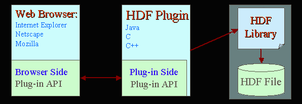
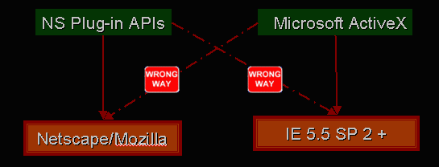
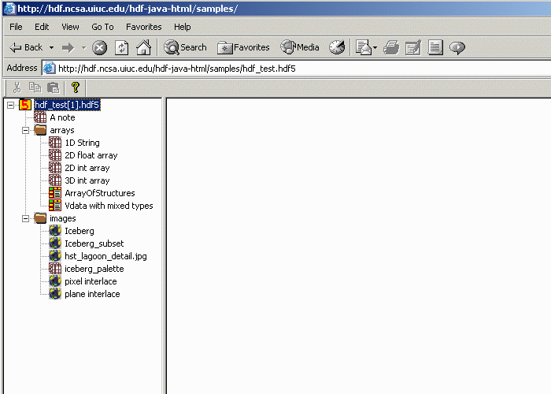
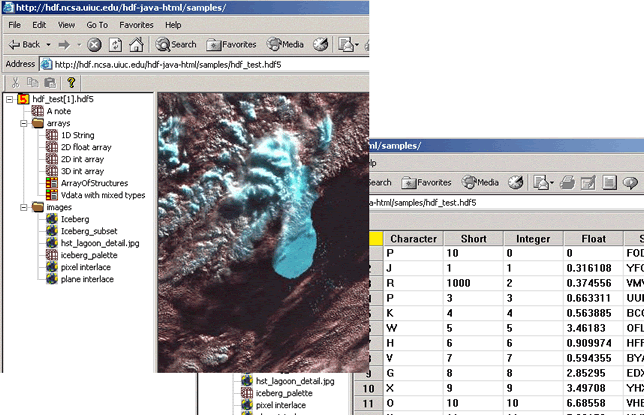

HDF Web-browser plugin is a windowed
browser plugin that is launched from a web browser to display HDF4 and HDF5
files. A browser plugin is a software program that extends the power
of Web browser by adding more features and supporting more types of content
than what the standard browser provides.
HDF Web-browser plugin is not HDFView. HDF Plug-in and HDFView are different
software. HDFView is Java based standalone applcation that is used to view
and edit HDF4 and HDF4 files and runs on multiple platforms. It has more browsing
features and edting features. HDF Web-browser plugin is "light" browser that
has less browsing features that HDFView. It has no editing feature. For more
information on HDFView, visit
/hdf-java-html/
HDF Web-browser plugin is not an Applet. Although both plug-in and applet are
launched in web browser, there is a major difference between the two. Like
other software, a plug-in is downloaded and installed only once. It is installed
onto local disk and launched from local machine. Applets are downloaded at each
invocation. The advantage of network traffic of a plug-in over an applet is obvious.
Reasons for HDF Plugin
Although there are tools for viewing HDF files, it is too much work for some users
to install the tool and keep update new releases, and most of the tools do not support
remote file access. The main goal of the HDF Web-browser plugin is to provide users
an easy to view HDF files locally or remotely with a web-browser.
The HDF web plug-in extends the HDF user communities to a more wide range. With a simple
click on a HDF file, users will be able to see the content of the file in their web-browser
as viewing other web support files such as JPEG. Users don't bother to know anything about
HDF APIs.
Click-and-view: by clicking on or drag-drop
a HDF file, Web-browser will recognize the file type and display the file (much like
the acrobat reader plug-in for pdf files)
Easy install and update: downloading and
installing the plug-in is just a simple click. No uninstall and reinstall is necessary
for new release. Users will be asked for automatic update when a new version is released
Lightweight: The plug-in is a lightweight module.
With relative small size, it takes little time and effort to download and install.
Browse remote files: with predefined the MIME type
and file extensions, the plug-in will take the advantage of the web browser to browse
HDF files over the internet
How Plugins Work
Plugins work on browsers through a pre-defined set of plug-in APIs. Plug-in APIs such as
Netscape Plug-in APIs and Microsoft ActiveX controls are defined for communication between
applications and browsers. There are two sets of APIs:
Plug-in Side Plug-in API: implemented by the plug-in and called by the browser
Browser Side Plug-in API: implemented by the browser and called by the plug-in

Plug-ins are dynamic code modules. When the browser starts, it lists the available plug-ins,
reads resources from each plug-in file to determine the MIME types for that plug-in, and
registers each plug-in library. The following stages outline the life cycle of a plug-in:
When the browser encounters data of a MIME type registered for a plug-in, it loads
the plug-in code into memory, if it hasn't been loaded already
The browser calls the plug-in API to create a new instance of the plug-in. Multiple
instances of the same plug-in can exist (a) if there are multiple embedded objects on a
single page, or (b) if several browser windows are open and each displays the same data type
A plug-in instance is deleted when a user leaves the instance's page or closes its window
When the last instance of a plug-in is deleted, the plug-in code is unloaded from memory
Plugins are platform and browser dependent. Each of these platform/browser combinations
has its own requirements. There are also different choices of programming languages and plugin
APIs. It is impossible to implement a single plugin to support all the platform/browser combinations
Platforms
Windows
Mac
Linux
Solaris
Browsers
Internet Explorer
Netscape or Mozilla
Languages
C++
C
Java
Plugin APIs
Netscape Plug-in APIs
Microsoft ActiveX controls
Furthermore, since Microsoft has removed support for Netscape plug-ins from IE 5.5 SP 2
and beyond, plug-ins developed in Netscape Plugin APIs will not work on IE anymore.
Netscape/Mozilla does not support ActiveX controls either.

Current Release And How To It
The current HDFPlugin is Windows only application. It is implemented as an
active document servers . When you put an HDF
file into Internet Explorer, the Internet Explorer (Container) calls the HDFplugin
(Server or plugin) to show HDF4 and HDF5 files.
The HDFPlugin is read-only. It does not have any editing
feature. It has limited browsing features. For more browsing and editing features, please
use the HDFView, a visual tool for
browsing and editing NCSA HDF4 and HDF5 files.
Installing HDFPlugin is very simple. Click on "Start Installer for Windows" button
on the Installation
page. The installer will install the plugin and set the Windows registry for you.
After you install the plugin, you can open HDF files in a web browser by draging and droping
a local hdf file into the browser or giving a URL. Up on opening a file, the file structure
is displayed in a tree.

To show the contend of dataset or image in the file, double left-mouse click on the dataset
or image. The content will display in image or spread-sheet like table.

Single right-mouse click to show the information and attributes of datasets ans groups.